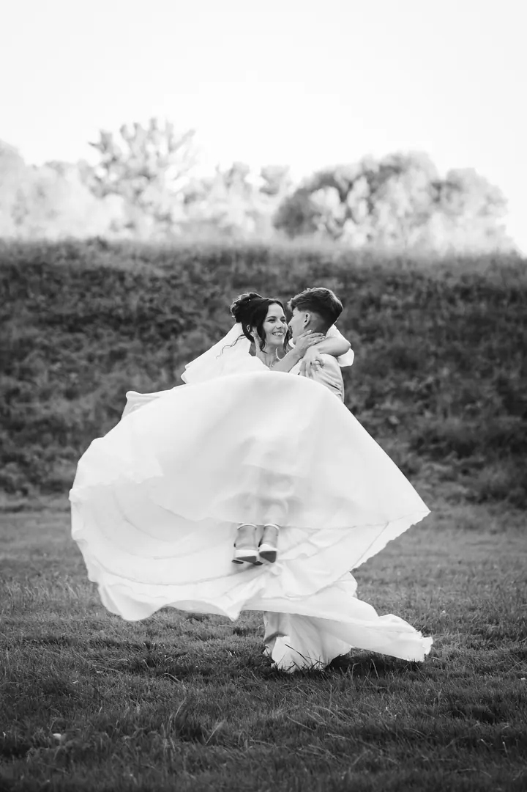

jedna
Svatby
Celý svatební den až 12 hodin, 300–400 fotografií, dárková krabička se 40 tištěnými fotkami a flashkou. Součástí je předsvatební focení nebo schůzka a detaily přizpůsobím vaší svatbě.

Svatební, rodinná a párová fotografka · Opava, okres Opava

Jmenuji se Barbora a jsem rodinná, párová a svatební fotografka z Opavska. Věnuji se přirozenému focení bez strojených póz a nejraději zachycuji váš smích a atmosféru dané chvíle.
Více o mně
Co fotím
jedna
Celý svatební den až 12 hodin, 300–400 fotografií, dárková krabička se 40 tištěnými fotkami a flashkou. Součástí je předsvatební focení nebo schůzka a detaily přizpůsobím vaší svatbě.
dvě
Přirozené focení venku i u vás doma, klidně i v zimě. Balíček S za 2 500 Kč s 10 fotografiemi, nebo M za 3 500 Kč s 30 fotografiemi barevně i černobíle.
tři
Společné focení pro vás dva, bez strojených póz a v pohodě. Spíš procházka, při které zachytím váš smích a atmosféru chvíle.
Reportážní fotografie z oslav, křtin, plesů, veřejných akcí i firemních večírků. 2 500 Kč za hodinu focení, zhruba 50–70 fotografií v elektronické podobě.
Žádné strojené pózy, jen opravdový smích.


Za objektivem
Ahoj, jmenuji se Barbora. Fotím svatby, rodiny a páry na Opavsku a ráda za vámi přijedu i dál. Nejvíc mě baví chvíle, které nikdo nenaaranžoval: smích kamarádek při chystání nevěsty, dojaté objetí po obřadu nebo blbnutí v poli se srdíčkovými brýlemi.
Nechci, abyste před foťákem stáli strnule a čekali na pokyny. Jen vás tu a tam jemně nasměruji, abyste vypadali přirozeně, a pak už se snažím být nenápadně u toho. Často slyším, že focení se mnou bylo spíš jako procházka s kamarádkou, a přesně tak to mám ráda.
Ke každé svatbě patří předsvatební focení nebo schůzka, abychom se poznali ještě před velkým dnem. A pokud chcete rodinné fotky, můžu přijet i k vám domů, kde se děti i dospělí cítí nejlíp.
Barbora
Ozvěte se přes formulář, telefonem nebo na Facebooku či Instagramu. Domluvíme termín a co od focení čekáte.
Ke svatbě patří předsvatební focení nebo schůzka, ze které dostanete 20 fotografií. Probereme průběh dne a detaily přizpůsobím vaší svatbě.
Na svatbě fotím až 12 hodin, od příprav po večerní zábavu. Vy si užíváte den a já zachytím, jak opravdu probíhal.
Ze svatby dostanete 300–400 upravených fotografií na flashce a v dárkové krabičce i 40 tištěných fotek 10×15 cm.
Portfolio
Fotografie jsou ilustrační
Otázky
Svatba vychází na 25 000 Kč. Zahrnuje 12 hodin focení, 300–400 fotografií, dárkovou krabičku se 40 tištěnými fotkami, flashku a předsvatební focení nebo schůzku.
Ano. V okrese Opava je doprava v ceně, mimo něj účtuji 10 Kč za kilometr.
Ráda. Focení u vás doma je pohodové hlavně pro děti a funguje skvěle i v zimě, kdy se ven moc nechce.
Nebojte se, to slyším často. Žádné strojené pózy, jen vás občas jemně nasměruji a jinak si focení užijete jako procházku.

Napište pár vět o tom, co si představujete. · +420 775 188 751